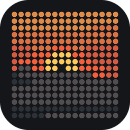
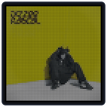
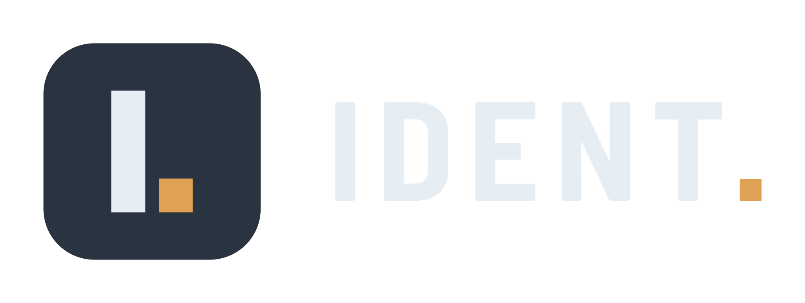
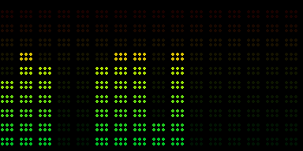
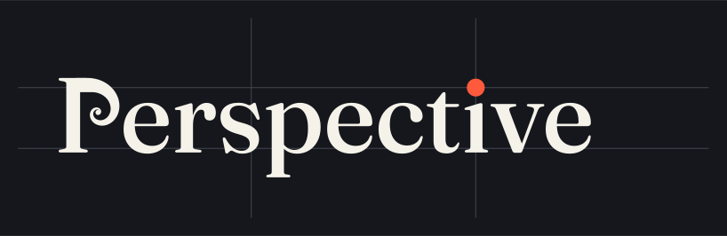
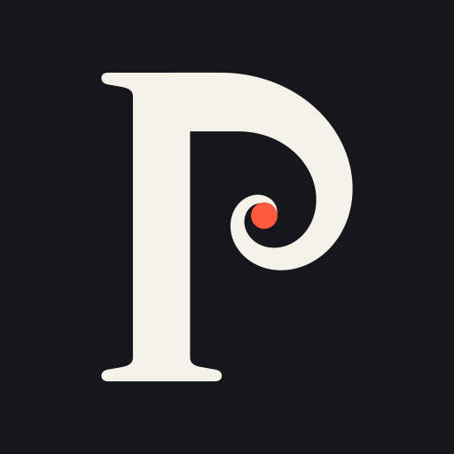

Useful things, built on Raspberry Pis.
LED panels that play your photos and your music, an e-paper board that tells the house when the pilot is home, and a handful of small tools that each do one job. The first is free for anyone to build.
Free & open source

Spotipi Photo
A glowing picture frame for the wall: your photos, then the album cover the moment Spotify starts playing. Built on Spotipi, by Ryan Ward.
In use at home


The wall board that answers “when are you back?” It reads a pilot’s roster; the roster never leaves the device.
In active development
Equalize
An equalizer, known to be graphic. Music on an LED panel, in sixteen styles.
Ready for release


Perspective
Finds the well-composed photos in Apple Photos and gathers them into an album.
Available